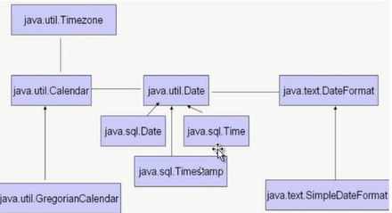
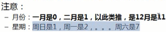
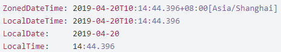
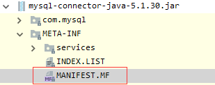
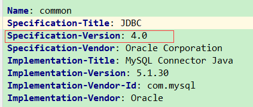
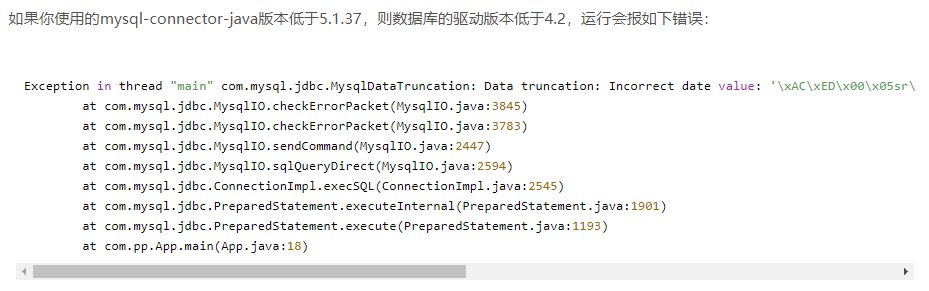

represents a specific instant in time, with millisecond precision. It allowed the interpretation of dates as year, month, day, hour, minute, and second values. It also allowed the formatting and parsing of date strings. |
(1) year是从1900开始

java.utl.Date d = new java.util.Date(); java.sql.Date date = new java.sql.Date(d.getTime()); //会丢失时分秒 Time time = new Time(d.getTime()); //会丢失年月日 Timestamp timestamp = new Timestamp(d.getTime()); //不会丢失 |
纳秒 | 10-9 s | ChronoUnit.NANOS |
毫秒 | 10-3 s | ChronoUnit.MILLIS |
Instant | 它代表的是时间戳（因为它代表了一个时间点，即相对于1970年1月1日的偏移量；但与java.util.Date类不同的是其精确到了纳秒级别。 |
LocalDate | 不包含具体时间的日期，比如2019-01-14。它可以用来存储生日，周年纪念日，入职日期等。 |
LocalTime | 它代表的是不含日期的时间 |
LocalDateTime | 它包含了日期及时间，不过还是没有偏移信息或者说时区。 |
ZoneOffset | 时区偏移量，比如：+8:00 |
ZonedDateTime | 这是一个包含时区的完整的日期时间  |
//获取毫秒数 Long milliSecond = LocalDateTime.now().toInstant(ZoneOffset.of("+8")).toEpochMilli(); |
// 将日期调整到该月的最后一天
LocalDate.now().with(TemporalAdjusters.lastDayOfMonth());
Duration.between(time1, time2);
Period.between(date1, date2);
SQL | Java |
date | LocalDate |
time | LocalTime |
timestamp | LocalDateTime |
 

<typeHandlers> |
@Test |
DateTimeFormatter formatter = DateTimeFormatter.ofPattern("yyyy-MM-dd HH:mm:ss"); |
@Test |
类 | 转换到旧的对象 | 转换到新的对象 |
Instant - java.util.Date | Date.from(instant) | date.toInstant() |
LocalDate - java.sql.Date | Date.valueOf(localDate) | date.toLocalDate() |
LocalTime - java.sql.Time | Time.valueOf(localTime) | date.toLocalTime() |
ZoneId - java.util.TimeZone | TimeZone.getTimeZone(id) | timeZone.toZoneId() |